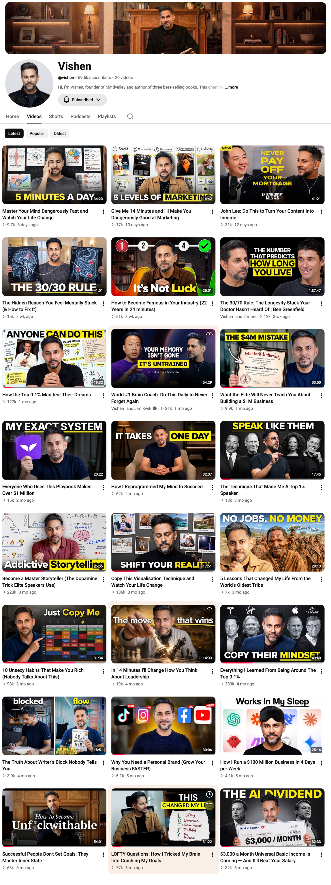

Here's what we've learned about winning ideas so far. Below is every video on the channel, broken down by where the idea came from, and whether it was data-backed before publishing.

Videos built on ideas checked against YouTube data before filming get a median of — views. Ideas that weren't get —.
Each line is one video, placed on the day it went live. Taller means more views to date.
Each bar is one video. Views to date, 3 November 2026. Master Storyteller was Vishen's idea, and it counts as validated because we rebuilt its title around YouTube-proven keywords. His follow-up on the same topic, without that, got 13K.
Traced from our Notion pipeline, the strategy deep dive and our weekly calls.
| YT validated | Video | Views |
|---|
Public YouTube view counts. Median means the middle video in each group, so one viral hit can't skew it.